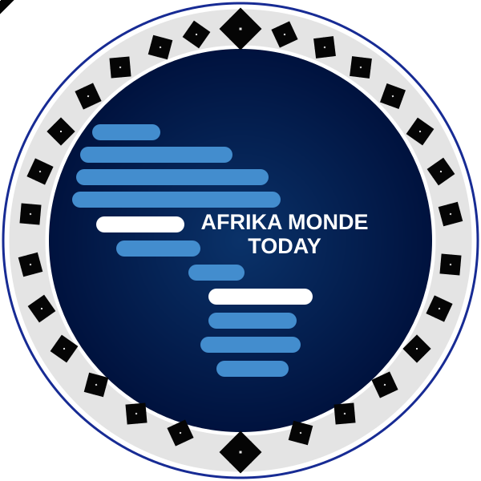

✦
AFRIQUE · MONDEÀ LA UNE
Les histoires qui façonnent notre avenir
Un regard sur les enjeux, les initiatives et les transformations de notre époque.
Découvrir les reportages ↗
AFRIKA MONDETODAY RegarderVotre chaîne africaine qui amène les réalités de l’Afrique dans le monde et les réalités du monde en Afrique.
À savoir : le lecteur est prêt à recevoir ton flux. Pour diffuser réellement la chaîne, il faudra intégrer le lien YouTube Live, HLS ou autre plateforme.
Un regard sur les enjeux, les initiatives et les transformations de notre époque.
Découvrir les reportages ↗Des explications claires pour mieux comprendre l’actualité.
Nos émissions ↗Culture, société et initiatives : place aux histoires humaines.
Voir les programmes ↗Ces cartes sont des exemples à remplacer par les articles et reportages de la chaîne.
Si YouTube ne prend pas en charge cette intégration pour la chaîne, utilisez le bouton « Toutes les vidéos » pour voir le catalogue officiel.
AFRIKA MONDE TODAY est une chaîne tournée vers l’information, la culture et les réalités de l’Afrique et du monde. Notre ambition : rapprocher les publics, donner la parole aux acteurs et éclairer les sujets qui comptent.
Entrer en contact ↗Retrouvez AFRIKA MONDE TODAY sur vos plateformes préférées.
Les liens des réseaux sociaux sont à remplacer par les adresses officielles.